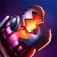

Habilidades
-

-

-

- 
-

-
PASSIVA
ANIME-SE!
Jinx recebe um aumento drástico de Velocidade de Movimento e de Velocidade de Ataque sempre que ajuda a destruir uma estrutura ou a abater um Campeão inimigo ou monstro épico da selva.
-
Q
TROCANDO!
Jinx modifica seus ataques básicos ao trocar entre Pow-Pow, sua metralhadora, e Fishbones, seu lança-mísseis. Ataques com Pow-Pow concedem Velocidade de Ataque, enquanto ataques com Fishbones causam dano em área de ação e recebem aumento de alcance, mas drenam Mana e reduzem a Velocidade de Ataque.
-
W
ZAP!
Jinx usa Zapper, sua pistola de choques, para disparar um projétil que causa dano ao primeiro inimigo atingido, reduzindo sua velocidade e revelando-o.
-
E
MORDIDINHA FLAMEJANTE!
Jinx arremessa uma fileira de granadas-armadilha que explodem após 5 segundos, deixando os inimigos em chamas. As Mordidinhas Flamejantes morderão campeões inimigos que caminharem sobre elas, enraizando-os no local.
-
R
SUPER MEGA MÍSSIL DA MORTE!
Jinx dispara um super-míssil no mapa, que acumula dano ao longo de seu trajeto. O míssil explodirá ao colidir com um campeão inimigo, causando dano a ele e a inimigos ao seu redor, com base em sua Vida removida.